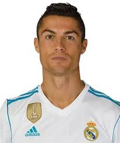

Es uno de los jugadores miembro del FIFA Century Club, formado por aquellos futbolistas con más de cien internacionalidades con su selección. Sus 200 partidos lo colocan primero en el listado a fecha de 2023 —el que más ha disputado de la historia de Portugal— y, lógicamente, también primero a nivel UEFA.
En el 2004, Cristiano disputó los Juegos Olímpicos de Atenas, donde Portugal no consiguió mostrar su mejor versión. Aun así, Ronaldo marcó un gol en la victoria ante Marruecos en el segundo partido de la fase de grupos. Fue la única victoria del combinado olímpico portugués en aquel torneo, que no pasó la fase de grupos inicial.

Desde muy pequeño, Cristiano ya tenía la garra, la valentía y la ambición de los grandes jugadores. A los catorce años le fichó el Sporting Clube de Portugal y se marchó a Lisboa para darse a conocer y crecer como jugador.